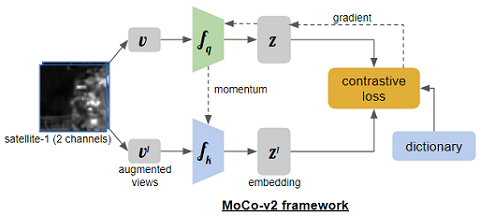

Unsupervised Deep Learning in Satellite Imagery
Contrastive Learning Research

Contrastive Learning Research
The performance of deep convolutional neural networks depends on their capability and the amount of training data. The datasets are becoming larger in every domain and different kinds of network architectures like VGG, GoogLeNet, ResNet, DenseNet, etc., increased network models' capacity.
However, the collection and annotation of large-scale datasets are time-consuming and expensive. Many self-supervised methods were proposed to learn visual features from large-scale unlabeled data without using any human annotations to avoid time-consuming and costly data annotations. Contrastive learning of visual representations has emerged as the front-runner for self-supervision and has demonstrated superior performance on downstream tasks. All contrastive learning frameworks involve maximizing agreement between positive image pairs relative to negative/different images via a contrastive loss function; this pretraining paradigm forces the model to learn good representations. These approaches typically differ in how they generate positive and negative image pairs from unlabeled data and how the data are sampled during pretraining.
Self-supervised approaches such as Momentum Contrast (MoCo) (He et al., 2019, Chen et al.,2020) can leverage unlabeled data to produce pre-trained models for subsequent fine-tuning on labeled data. In addition to MoCo, these include frameworks such as SimCLR (Chen et al., 2020) and PIRL (Misra and Maaten, 2020).
Remote sensing data has become broadly available at the petabyte scale, offering unprecedented visibility into natural and human activity across the Earth. In remote sensing, labeled data is usually scarce and hard to obtain. Due to the success of self-supervised learning methods, we explore their application to large-scale remote sensing datasets.
While most self-supervised image analysis techniques focus on natural imagery, remote sensing differs in several critical ways. Natural imagery often has one subject; remote sensing images contain numerous objects such as buildings, trees, roads, rivers, etc. Additionally, the important content changes unpredictably within just a few pixels or between images at the same location from different times. Multiple satellites capture images of the same locations on earth with a wide variety of resolutions, spectral bands (channels), and revisit rates, such that any specific problem can require a different combination of sensor inputs (Reiche et al., 2018,Rustowicz et al., 2019).
While MoCo and other contrastive learning methods have demonstrated promising results on natural image classification tasks, their application to remote sensing applications has been limited.
Unlike contrastive learning for traditional computer vision images where different views (augmentations) of the same image serve as a positive pair, we propose to use positive pairs from different sensors for the same location.


In this work, we demonstrate that pre-training MoCo-v2 on data from multiple sensors lead to improved representations for remote sensing applications.
Many self-supervised learning methods for visual feature learning have been developed without using any human-annotated labels. Compared to supervised learning methods which require a data pair Xi and Yi while Yi is annotated by human labors, self-supervised learning also trained with data Xi along with its pseudo label Pi while Pi is automatically generated for a pre-defined pretext task without involving any human annotation. The pseudo label Pi can be generated by using attributes of images or videos such as the context of images or by traditional hand-designed methods. As long as the pseudo labels P are automatically generated without involving human annotations, then the methods belong to self-supervised learning. Recently, self-supervised learning methods have achieved great progress.
Self-supervised contrastive
learning approaches such as MoCo ,
MoCo-v2, SimCLR, and PIRL have demonstrated
superior performance and have emerged as the fore-runner
on various downstream tasks. The intuition behind these
methods are to learn representations by pulling positive
image pairs from the same instance closer in latent space
while pushing negative pairs from difference instances further
away. These methods, on the other hand, differ in the
type of contrastive loss, generation of positive and negative
pairs, and sampling method.
Contrastive learning of visual representations using MoCo (MoCo-v2 - Chen, et
al., Facebook AI Research, 2020) has emerged as the front-runner for
self-supervision and has demonstrated superior performance on downstream tasks.
There is a performance gap between supervised learning using labels and self-supervised contrastive learning method, MoCo-v2, on remote sensing datasets. For instance, on the Functional Map of the World (fMoW) image classification benchmark, there is an 8% gap in top 1 accuracy between supervised and self-supervised methods. By leveraging spatially aligned images over time to construct temporal positive pairs in contrastive learning and geo-location in the design of pre-text tasks, Geography-Aware Self-supervised Learning (Ayush, et al., Stanford University, 2020) were able to close the gap between self-supervised and supervised learning on image classification, object detection and semantic segmentation on remote sensing and other geo-tagged image datasets.
In this work, we provide an effective approach for improving representation learning using data from different satellite imagery using MoCo-v2.
Does contrastive pre-training with data from multiple sensors lead to improved representations
for remote sensing applications?
Pre-train the contrastive model using unlabelled data from multiple satellites and use that model for
downstream remote sensing tasks.
We want to show that our approach to using images from different satellites for the same location as
naturally augmented images as input to the MoCo-v2 method provides high-quality representations and
transferable initializations for satellite imagery interpretation.
Despite many differences in the data and task properties between natural image classification and
satellite imagery interpretation, we want to show the benefit of MoCo-v2 pretraining across multiple
patches from different satellites for satellite imagery and investigate representation transfer to a
target dataset.
TODO: Add details
| Dataset | Satellites | Number of Images | Image Size | Labels | Notes |
|---|---|---|---|---|---|
| BigEarthNet |
|
590,326 patches
|
20x20 to 120x120 | Multiple, up to 43 |
|
| SEN12MS |
|
541,986 patches
|
256X256 | Single, 17 Full and 10 Simplified | Partial overlapping |
| FMoW |
|
1,047,691 patches
|
Variable Over 2500x2500 | Multiple, up to 63 Bounding Box Annotations |
|
| RESISC45 | NA | 31,500 Images
|
256x256 | Single, 45 scene classes |
|
The BigEarthNet archive was constructed by the Remote Sensing Image Analysis (RSiM) Group and the Database Systems and Information Management (DIMA) Group at the Technische Universität Berlin (TU Berlin). This work is supported by the European Research Council under the ERC Starting Grant BigEarthNet and by the Berlin Institute for the Foundations of Learning and Data (BIFOLD). Before BIFOLD, the Berlin Big Data Center (BBDC) supported the work. BigEarthNet is a benchmark archive, consisting of 590,326 pairs of Sentinel-1 and Sentinel-2 image patches. To construct BigEarthNet with Sentinel-2 image patches (called as BigEarthNet-S2 now, previously BigEarthNet), 125 Sentinel-2 tiles acquired between June 2017 and May 2018 over the 10 countries (Austria, Belgium, Finland, Ireland, Kosovo, Lithuania, Luxembourg, Portugal, Serbia, Switzerland) of Europe were initially selected. All the tiles were atmospherically corrected by the Sentinel-2 Level 2A product generation and formatting tool (sen2cor). Then, they were divided into 590,326 non-overlapping image patches. Each image patch was annotated by the multiple land-cover classes (i.e., multi-labels) that were provided from the CORINE Land Cover database of the year 2018 (CLC 2018). To construct BigEarthNet with Sentinel-1 image patches (called as BigEarthNet-S1), 321 Sentinel-1 scenes acquired between June 2017 and May 2018 that jointly cover the area of all original 125 Sentinel-2 tiles with close temporal proximity were selected and processed. BigEarthNet-S1 consists of 590,326 preprocessed Sentinel-1 image patches - one for each Sentinel-2 patch.
The SEN12MS dataset contains 180,662 patch triplets of corresponding Sentinel-1 dual-pol SAR data, Sentinel-2 multi-spectral images, and MODIS-derived land cover maps. The patches are distributed across the land masses of the Earth and spread over all four meteorological seasons. This is reflected by the dataset structure. The captured scenes were tiled into patches of 256 X 256 pixels in size and implemented a stride of 128 pixels, resulting in an overlap between adjacent patches of 50% assuming 50% overlap is the ideal trade-off between patch independence and maximization of the number of samples. All patches are provided in the form of 16-bit GeoTiffs containing the following specific information:
Functional Map of the World (fMoW) is a large-scale publicly available remote sensing dataset consisting of approximately 363,571 training images and 53,041 test images across 62 highly granular class categories. It provides images (temporal views) from the same location over time as well as geo-location metadata (lat; lon) for each image. Most of the areas have multiple temporal views from 1 to 21, and on average there is about 2.5-3 years of difference between the images from an area. FMoW is a global dataset consisting of images from seven continents which can be ideal for learning global remote sensing representations. There are two versions of the dataset: fMoW-full and fMoW-rgb. fMoW-full is in TIFF format, contains 4-band and 8-band multispectral imagery, and is quite large at ~3.5TB in size. fMoW-rgb is in JPEG format, all multispectral imagery has been converted to RGB, and it is significantly smaller in size at ~200GB.
RESISC45 dataset is a publicly available benchmark for Remote Sensing Image Scene Classification (RESISC), created by Northwestern Polytechnical University (NWPU). This dataset was extracted, by the experts in the field of remote sensing image interpretation, from Google Earth (Google Inc.) that maps the Earth by the superimposition of images obtained from satellite imagery, aerial photography and geographic information system (GIS) onto a 3D globe. This dataset contains 31,500 256x256 RGB images, covering 45 scene classes with 700 images in each class and cover more than 100 countries and regions all over the world, including developing, transition, and highly developed economies. It is one of the most comprehensive datasets regarding land use. RESISC45 has a more diverse assortment of classes as well as more samples per class. The authors developed it while keeping in mind the desire to have both urban and rural classes as well as scenes classifiable by large features and small features alike. The dataset includes scenes including large features such as dense_residential, chaparral, mobile_home_park, river; smaller features such as storage-tank and basketball court; and even classes such as sea-ice and cloud.
TODO: Add some EDA images and brief description. No details on how the image looks for the same location from different sensors. Those details goes to Solution section.
In this section, we briefly review Contrastive Learning Framework for unsupervised learning and detail our proposed approach to improve Moco-v2, a recent contrastive learning framework, on satellite imagery from multiple sensors data.
Will be updated once the results from MoCo-v2 are available and analysis is done.
Conclusion will be provided once the results are available from Moco-V2. The following is the current research direction:
ernesto.oropeza@berkeley.edu
tc.han@ischool.berkeley.edu
suryag@berkeley.edu
taeil.goh@berkeley.edu